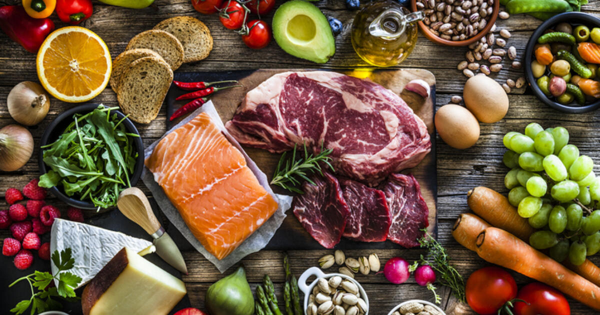

In this project I used Python to show what variables correlated with gross movie revenue.
It was my first project in Python and it taught me a lot about Python, the syntax and various libraries such as Pandas, Numpy and Matplotlib


This project used SQL to explore a large public Covid-19 dataset from OurWorldInData. The data includes total Covid-19 deaths and cases, monthly Covid-19 cases per country, Covid-19 vaccine doses per Population and many more

I used Tableau Public in order to visualize my findings from the Data exploration I did in SQL. The interactive visualization shows the most important of my findings

This project honed my Excel data exploration and Data cleaning skills coupled with the final visualization of my findings

This project marked the completion of my Google Data Analytics course which revolves around biking data in Chicago

This project was of particular interest of mine in which I used Power BI to show the Environmental Impacts of various commonly eaten food groups globally

In this Project I used raw housing data from Nashville, US and transformed it in SQL into useful data for further Data Exploration